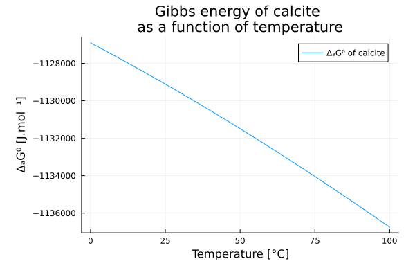
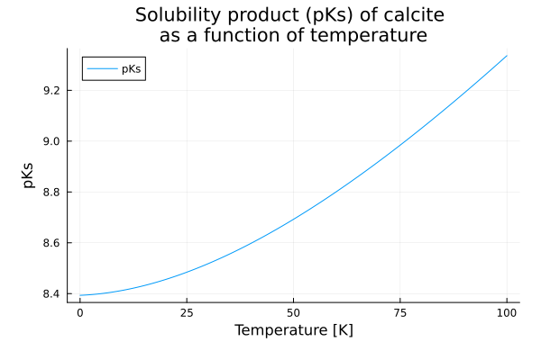

Calculation of thermodynamic properties of calcite dissolution
This example is equivalent to quickstart except that no database is needed.
Let us recall the example which consisted of studying the dissolution of calcite in water.
\[\ce{CaCO3 <=> Ca^2+ + CO3^2-}\]
It is possible to calculate the thermodynamic properties of the reaction, in particular the solubility constant of the reaction ($\ln K$) which is related to the Gibbs free energy of the reaction ($\Delta_r G^°$). This solubility constant is a function of temperature and the calculation is performed at a reference temperature of 298 K and at a pressure of 1 Atm using the following equation:
\[\Delta_r G^° = - RT\ln K\]
where $\Delta_r G^°$ is deduced from the Gibbs energies of formation ($\Delta_f {G_i}^°$) of the other chemical species involved in the reaction:
\[\Delta_r G^° = \sum_i \nu_i \Delta_f {G_i}^°\]
First step: species declaration
The first step, therefore, is to construct each of the species present in the reaction. This can be done with the Species function. Its simplest use is as follows:
using ChemistryLab
calcite = Species("CaCO3", aggregate_state=AS_CRYSTAL, class=SC_COMPONENT)
Ca²⁺ = Species("Ca+2", aggregate_state=AS_AQUEOUS, class=SC_COMPONENT)
CO₃²⁻ = Species("CO3-2", aggregate_state=AS_AQUEOUS, class=SC_COMPONENT)The created object contains a certain amount of information wheose properties can be entered a posteriori (or during the construction of the Species).
CO₃²⁻Species{Int64}
name: CO3-2
symbol: CO3-2
formula: CO3-2 ◆ CO₃²⁻
atoms: C => 1, O => 3
charge: -2
aggregate_state: AS_AQUEOUS
class: SC_COMPONENT
properties: M = 0.06000799997926252 kg mol⁻¹It can be noted that during the construction of the species, a calculation of the molar mass is systematically performed.
Second step: calculation of the thermodynamic properties of each species
For each species, it is possible to assign thermodynamic properties, such as the Gibbs energy of formation or the heat capacity. This data can be found in databases (e.g. thermoddem database). For calcite, the properties are described in the following figure (which is a capture of the Thermoddem website). 
Thermodynamic properties of formation
The first step involves associating the values of the thermodynamic properties of formation for each species. For calcite, this can be done as follows:
th_prop_0_calcite = Dict(:Cp⁰ => 83.47u"J/K/mol", :ΔₐH⁰ => -1207605u"J/mol", :S⁰ => 91.78u"J/K/mol", :ΔₐG⁰ => -1129109u"J/mol", :V⁰ => 36.934)Heat capacity, enthalpy and free energy as a function of temperature
The second step is to describe the evolution of heat capacity as a function of temperature for each species. As exposed in the previous figure, heat capacity is expressed as a function of temperature: $C_p = a + bT + cT^2$. A reference temperature can then be defined in order to construct thermodynamic functions, such as heat capacity, entropy, enthalpy and free enthalpy. For calcite, this can be done as follows:
using DynamicQuantities
params_Cp_calcite = Dict(:a₀ => 99.72u"J/K/mol", :a₁ => 26.92e-3u"J/mol/K^2", :a₂ => -21.58e5u"J*K/mol")
T_ref = Dict(:T => 298.15u"K")
params_calcite = merge(th_prop_0_calcite, params_Cp_calcite, T_ref)
dtf_calcite = build_thermo_functions(:cp_ft_equation, params_calcite)In the Thermoddem database, the expression for heat capacity as a function of temperature is written as:
\[C_p(T) = a + b * T + c * T^{-2}\]
However, the expression given in Thermoddem for this species is a simplification of the following more complete function:
\[a_0 + a_1 * T + a_2 * T^{-2} + a_3 * T^{-0.5} + a_4 * T^2 + a_5 * T^3 + a_6 * T^4 + a_7 * T^{-3} + a_8 * T^{-1} + a_9 * T^{0.5} + a_{10} * log(T)\]
This expression is implemented in ChemistryLab and can be called by passing :cp_ft_equation as an argument.
Calling the thermo_functions (here build_thermo_functions) allows the calculation of the expressions for the different thermodynamic properties as a function of temperature, according to the following expressions:
\[\Delta_a {H^°}_T = \int_{T_{ref}}^T C_p(\tau) d\tau + \Delta_f {H^°}\]
\[{S^°}_T = \int_{T_{ref}}^T \frac{C_p(\tau)}{\tau} d\tau + {S^°}\]
\[\Delta_a {G^°}_T = \int_{T_{ref}}^T C_p(\tau) d\tau - T * \int_{T_{ref}}^T \frac{C_p(\tau)}{\tau} d\tau - (T - T_{ref}){S^°}_{T_{ref}} + \Delta_f G^°\]
where $\Delta_a {H^°}_T$ and $\Delta_a {G^°}_T$ are the apparent enthalpy and free energy (Gibbs) at T.
The expressions for the thermodynamic properties of calcite can be added to the species calcite as follows:
calcite.Cp⁰ = dtf_calcite[:Cp⁰]
calcite.ΔₐH⁰ = dtf_calcite[:ΔₐH⁰]
calcite.S⁰ = dtf_calcite[:S⁰]
calcite.ΔₐG⁰ = dtf_calcite[:ΔₐG⁰]The symbolic expression is computed for each property and writes as follows for Gibbs energy of calcite:
T_ref = Dict(:T => 298.15u"K")
params = merge(th_prop_0_calcite, params_Cp_calcite, T_ref)
dtf_calcite = build_thermo_functions(:cp_ft_equation, params)
calcite.ΔₐG⁰ = dtf_calcite[:ΔₐG⁰]SymbolicFunc:
Expression: -1.1399107839328907e6 + 596.2686733939438T + 1.079e6 / T - 0.01346(T^2) - 99.72T*log(T) [m² kg s⁻² mol⁻¹]
Variables: T
References: T=298.15 Kusing Plots
p1 = plot(xlabel="Temperature [°C]", ylabel="ΔₐG⁰ [J.mol⁻¹]", title="Gibbs energy of calcite \nas a function of temperature")
plot!(p1, θ -> calcite.ΔₐG⁰(T = 273.15+θ), 0:0.1:100, label="ΔₐG⁰ of calcite")
Similarly, we can provide information on the thermal capacity of species $\ce{Ca^2+}$ and $\ce{CO3^2-}$, as proposed in the thermoddem database:


These new properties are also functions of temperature. However, unlike calcite, the heat capacities of $\ce{Ca^2+}$ and $\ce{CO3^2-}$ as a function of temperature are expressed using the Helgeson-Kirkham-Flowers (HKF) equation for Cp(T) of aqueous ions. The HKF Cp(T) model is not currently available as a built-in thermodynamic model in ChemistryLab; we therefore use the constant value at 25 °C given in Thermoddem, that is -26.38 and -276.88 J mol⁻¹ K⁻¹ respectively.
params_Ca²⁺ = merge(th_prop_0_Ca²⁺, params_Cp_Ca²⁺, T_ref)
dtf_Ca²⁺ = build_thermo_functions(:cp_ft_equation, params_Ca²⁺)
Ca²⁺.ΔₐG⁰ = dtf_Ca²⁺[:ΔₐG⁰]
params_Cp_CO₃²⁻ = Dict(:a₀ => -276.88u"J/K/mol")
params_CO₃²⁻ = merge(th_prop_0_CO₃²⁻, params_Cp_CO₃²⁻, T_ref)
dtf_CO₃²⁻ = build_thermo_functions(:cp_ft_equation, params_CO₃²⁻)
CO₃²⁻.ΔₐG⁰ = dtf_CO₃²⁻[:ΔₐG⁰]SymbolicFunc:
Expression: -460255.728 - 1804.4305786067766T + 276.88T*log(T) [m² kg s⁻² mol⁻¹]
Variables: T
References: T=298.15 KThe Helgeson-Kirkham-Flowers equation for the temperature dependence of Cp of aqueous ions is not yet available as a built-in thermodynamic model. The expressions for enthalpies and free energies remain temperature-dependent thanks to the integration performed on Cp. Within the temperature and pressure ranges typically considered in ChemistryLab (0–100 °C, 1 atm), assuming a constant Cp has little impact on the solubility product.
Third step: writing the reaction
Now we can write the dissolution/precipitation reaction of calcite.
r = Reaction([calcite, Ca²⁺, CO₃²⁻]; equal_sign='↔') equation: CaCO₃ ↔ Ca²⁺ + CO₃²⁻
reactants: CaCO₃ => 1
products: Ca²⁺ => 1, CO₃²⁻ => 1
charge: 0
properties: ΔᵣG⁰ = 117958.22293289064 - 2521.1818533574337T + -1.079e6 / T + 0.01346(T^2) + 402.98T*log(T) [m² kg s⁻² mol⁻¹] ◆ vars=(T) ◆ T=298.15 K
logK⁰ = (1.079e6 - 117958.22293289064T + 2521.1818533574337(T^2) - 402.98(T^2)*log(T) - 0.01346T*(T^2)) / (19.144757680815896(T^2)) [m² kg s⁻² mol⁻¹] ◆ vars=(T) ◆ T=298.15 KDuring the construction of this reaction, the thermodynamic properties of the reaction are calculated.
\[RT \; ln(K) = - \Delta_r G^° = - \sum_i \nu_i \Delta_f {G^°}_i\]
using Plots
p1 = plot(xlabel="Temperature [K]", ylabel="pKs", title="Solubility product (pKs) of calcite \nas a function of temperature")
plot!(p1, θ -> r.ΔᵣG⁰(T = 273.15+θ) / 8.31 / (273.15+θ) / log(10), 0:0.1:100, label="pKs")
Notes and next steps
This example demonstrates the manual workflow: create species, attach thermodynamic data from an external source, build a reaction and evaluate its temperature-dependent properties.
In practice, loading species from a built-in database (see Database Interoperability) is faster and less error-prone:
all_species = build_species(datapath("cemdata18-merged.json"))
species = speciation(all_species, split("Cal H2O@");
aggregate_state=[AS_AQUEOUS], exclude_species=split("H2@ O2@ CH4@"))To go further and compute the actual equilibrium state (species amounts, pH, saturation index), build a ChemicalSystem from the species and call equilibrate. See the Chemical Equilibrium tutorial for the complete workflow.